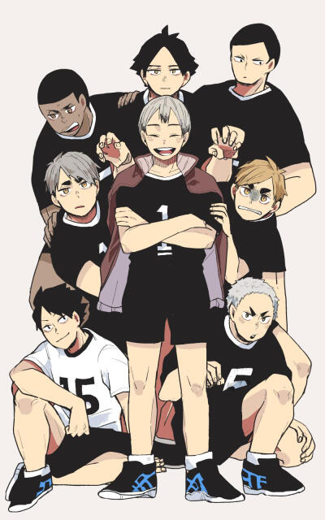
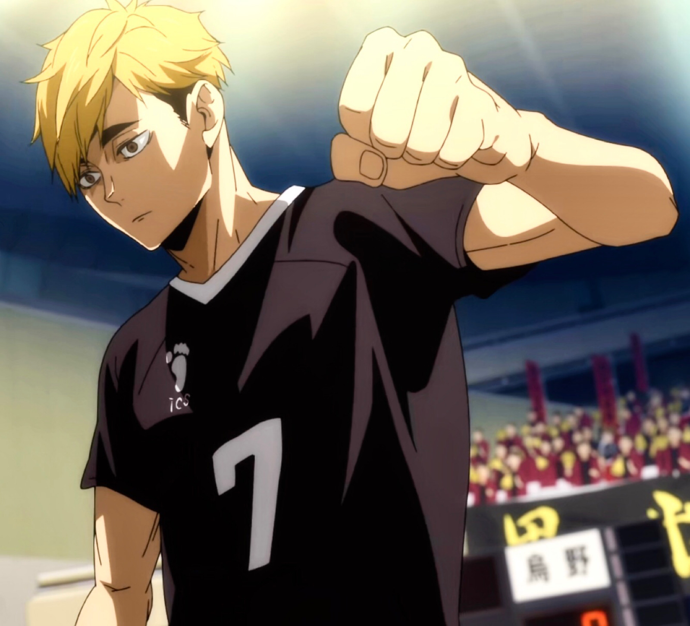
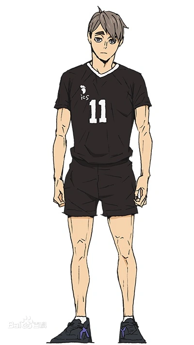
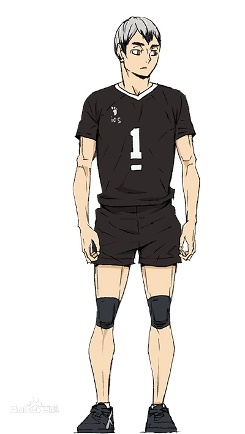
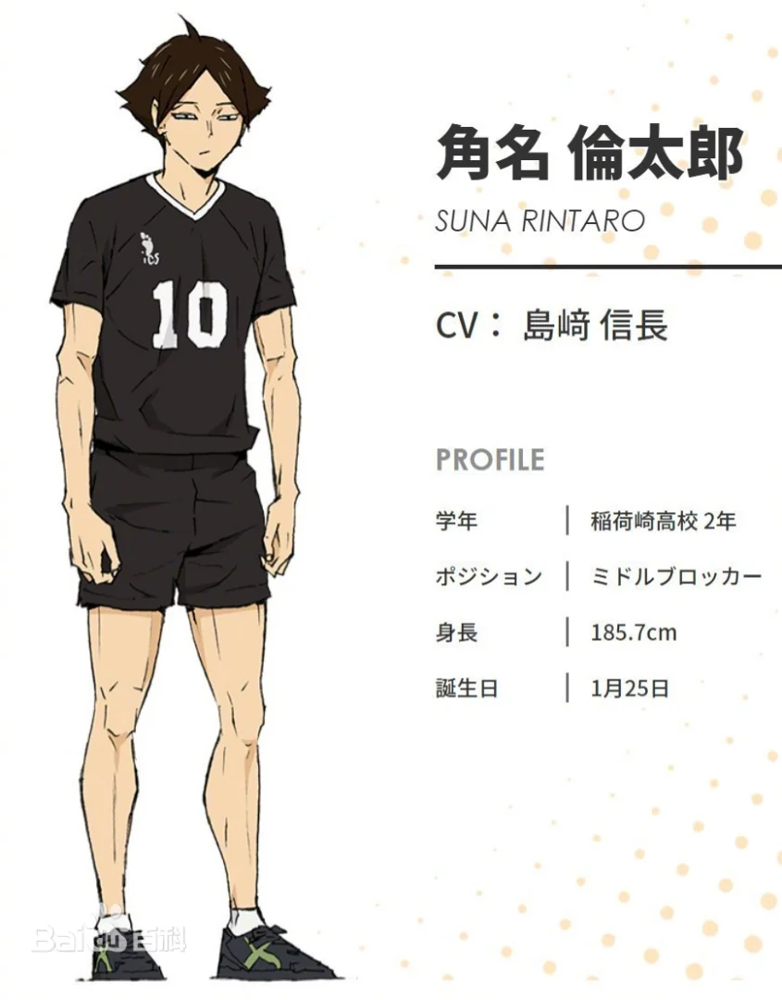
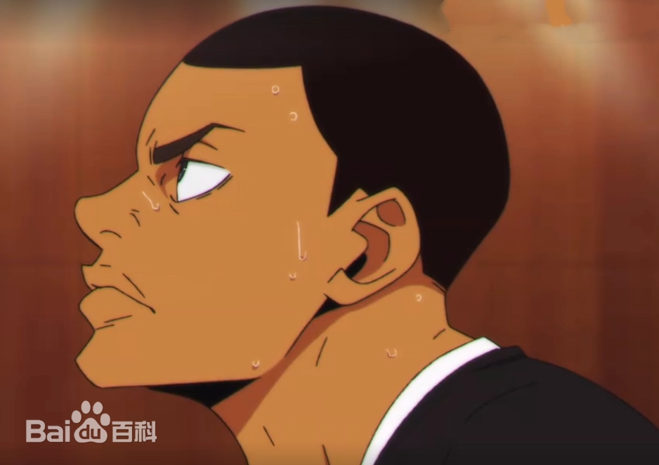
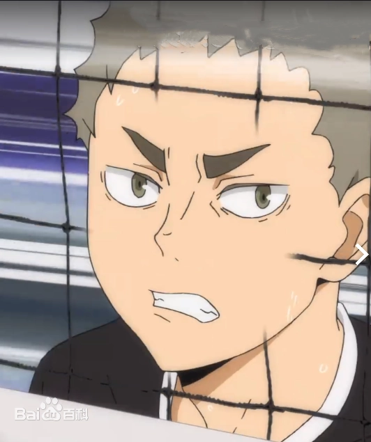

人物背景
稻荷崎高中

宫侑 （ みやあつむ； miya atsumu），别名侑侑（木兔称呼）侑被称为“全国高中NO.1二传手”。
在日本春季高中排球赛中宫侑以稻荷崎高校队伍的二传手身份登场，同时登场的还有他的双胞胎兄弟“宫治”，两人被合称为“高中排球界最强的双生子宫兄弟”。
常与宫治吵架打架，两兄弟打架的场景被称为“排球部特产双胞胎大乱斗”，不过打完之后又会和好如初一块玩游戏、练排球。
宫侑长得很帅（公式认定），性格有些恶劣，很好战不服输，说话毫不客气，对感兴趣的人有些自来熟，平时讲话是关西腔。他称呼双胞胎兄弟宫治为さむ（samu）。
很喜欢球队横幅写的“无需回忆”，倾向于想“今天要干什么”，因为对于宫侑而言所谓的回忆已经全都化成他肌肉的一部分了。

宫治 （みやおさむ；miya osamu）。宫治长得很帅（公式认定），性格相对于双胞胎兄弟宫侑来说稍微温和成熟，但实际上也是十分不服输的类型。常与宫侑吵架打架，两兄弟打架的场景被称为“排球部特产双胞胎大乱斗”，不过打完之后又会和好如初一块玩游戏、练排球。
宫兄弟两人的排球技术一路飙升，升入高中之后被合称为“高中排球界最强的双生子宫兄弟”。
和宫侑合作无间的配合被宫侑自称为“灵魂出窍时间差”。

北信介（きたしんすけ）。稻荷崎高校在春高2013赛季的队长，在2012年带领稻荷崎成为IH的亚军
因为像大人一样更注重过程，认为“每天做的事造就了自己”而被队友认为是“像机器人一样”
于春高第二轮败给乌野高校，次年春高第三轮再度对上乌野获胜，宫氏兄弟获胜，和阿兰一起在观众席出现鼓掌。
毕业后回老家务农，给宫治饭团店提供新米。

角名伦太郎（suna rintaro）。所属：稻荷崎高校2年级1组
位置：副攻手（MB）10号

尾白阿兰。实力接近全国三大主攻手

银岛结。所属：稻荷崎高校2年级2组
位置：主攻手（WS）5号
